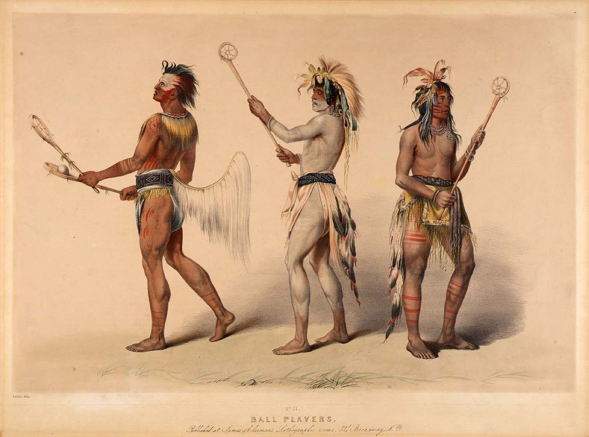
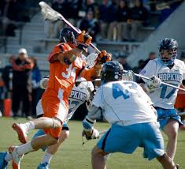

Growth of Lacrosse |
|---|
|
Lacrosse is one off the fastest growing sports in America, and it is the fastest growing sport in Georgia, specifically in the Metro Atlanta area. At the college level, the Southeast specifically has grown 263% since then, and you can see the growth of other regions
here. There's a reason lacrosse is called |
Lacrosse is the oldest sport in America, it was created by the Native Americans and was given its name by the French. The Native Americans called lacrosse The Creators Game, as they believed that it was a way to please their gods as well as solve minor conflicts. Their version of lacrosse is very different from what is played today, as their playing area could span miles and there could be hundreds of players, but the basics remain mostly the same. Equipment Used in Lacrosse
|  |
|  |
Lacrosse is typically played by 10 players on each team, 3 attackmen, 3 midfielders, 3 defenders, and a goalie. The names of these positions do a relatively good job describing their role on the field, attackmen stay on the offensive side of the field, midfielders can roam the field as they please, and then defenders and goalies must stay on the defensive side of the field. The game is played with a hard rubber ball roughly the size of a baseball or tennis ball, along with a stick to control it and protective equipment. The offensive playstyles pull heavily from basketball and a little bit from hockey since players can travel behind the goal. The field is the same size as a soccer pitch or football field including the endzones. The game consists of 4 quarters ranging in length from 12 minutes to 15 minutes depending on the level of play, and the game is started and restarted after every goal by a faceoff which is where the midfielders for both teams fight for the initial possession. If you want to know more feel free to read the US Lacrosse rulebook here. |
{kind=link}